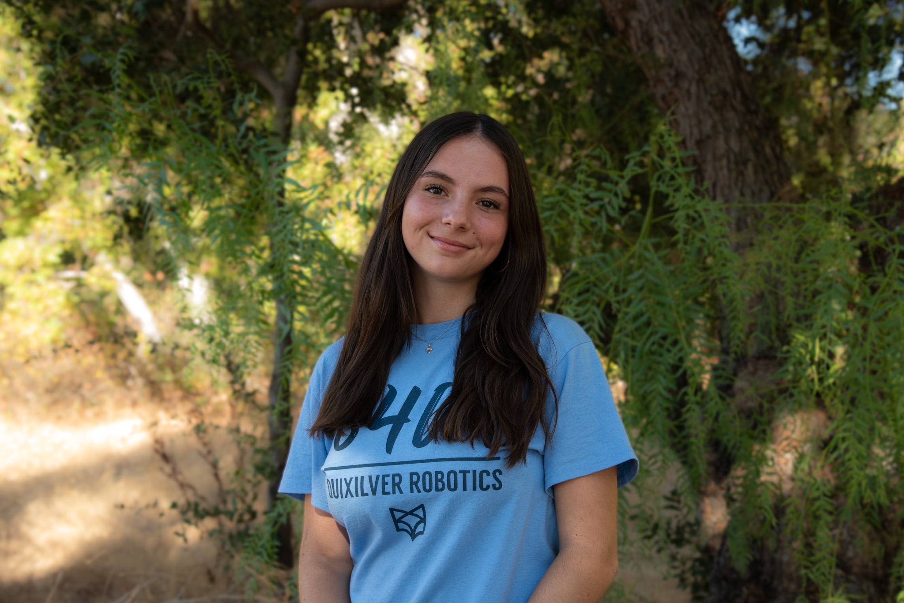
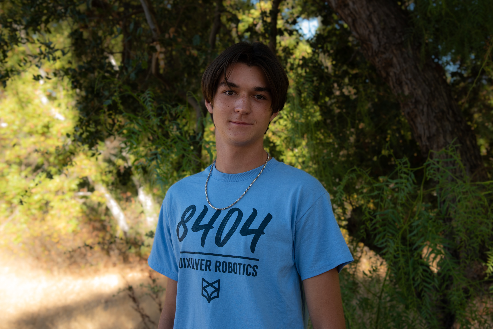
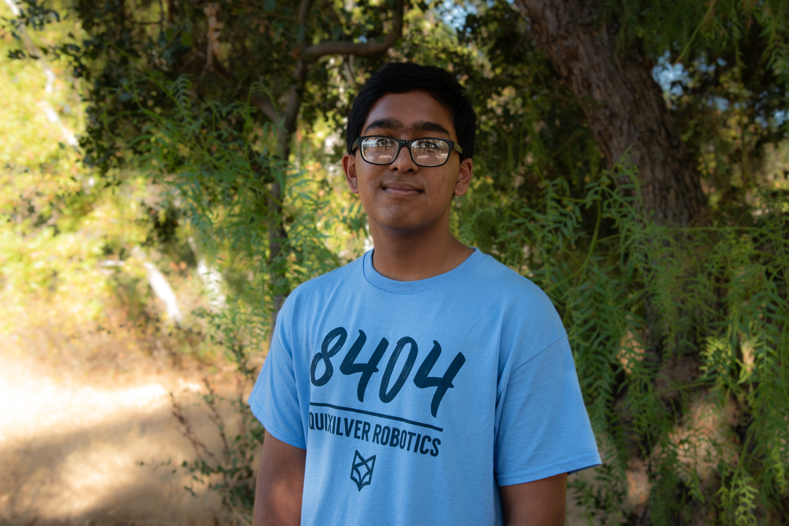

Rohi Patil (Captain)
rohipatil@quixilver8404.org
Rohi is a senior currently attending Leland High School and is excited for her fourth year with Quixilver 8404! She has had a lot of fun with Lego robotics and now really enjoys mechanical work. Mechanical work always fascinated Rohi; in general “working with her hands” makes her happy. Other than robotics, Rohi plays the piano where she is currently working on her diploma and she participates in sports, one of which is badminton. Rohi is an avid lover of nature and all the animals in it. At the moment she has a betta fish and hopes to get many more pets in the future. You can often find her in her garage just having fun with random materials.
Fun fact: Rohi has a twin sister.

Ana Flacau (Vice Captain)
anaflacau@quixilver8404.org
Ana is a sophomore at Leland High School and is thrilled to participate in her second season on this team. She began her robotics career on an FLL team where she was exposed to programming. Since then, Ana has discovered a passion for mechanical while on this team. She’s excited to continue to improve her mechanical skills this year. Outside of robotics, Ana participates in the Leland High School’s Speech and Debate program in Congressional debate as well as Declamation. In her free time, she enjoys hanging out with friends, watching movies, backpacking, and camping. You can often find her listening to music in her room and spending time with her foster kitties.
Fun Fact: Ana’s favorite movie genre is horror and she enjoys learning about true crime cases.

Jaiveer Bala (Mechanical Lead)
jaiveerbala@quixilver8404.org
Jaiveer is an eighth grader currently attending Bret Harte Middle School and is excited for a new year on 8404! Jaiveer has always enjoyed the mechanical aspect of things, and he does several projects on the side. Aside from robotics, he likes to listen to music, play video games with his friends till late at night, or scroll endlessly. You can often find him in his room designing something new.
Fun Fact: Jaiveer is the youngest mech lead in team history.

Ishaan Desai (Programming Lead)
ishaandesai@quixilver8404.org
Ishaan, a sophomore, who is thrilled to start his FTC journey with Team Quixilver 8404. His passion for robotics began early, driven by a fascination with how simple components can come together to create something complex. His experience in Lego robotics has led him to build a number of robots with varied capabilities.
Fun Fact: Ishaan's favorite vegetable is carrots.

Rayden Khor (Mechanical)
raydenkhor@quixilver8404.org
Rayden is a freshman at Leland High School and is excited to be a part of Quixilver 8404. Rayden has previously participated in Lego Robotics and enjoys the 'hands on' approach of mechanical. He is very excited to be honing his mechanical and design skills this year with the team. He participates in Leland's Speech and Debate Program outside of Robotics, in events Expository and Impromptu. In his free time, he reads and spends time in the garage. You can find him spending time with family and reading.
Fun Fact: Rayden enjoys listening to classical russian music.

Daniel Pashkevich (Mechanical)
danielpashkevich@quixilver8404.org
Daniel is a freshman at Leland High school, and is extremely excited to be part of the team for his first year. Daniel is very passionate about engineering, and has loved it for as long as he can remember. From building Legos to working with a real robot, his knowledge in engineering has come a long way. Every day Daniel aims to learn new things and advance his skills in the field, and he aims to do so with the help of robotics. In his free time, Daniel typically spends his time playing soccer or hanging out with friends. He also loves music, and spends much of his time listening to it. He also enjoys video games, TV shows, and spending time outside with his family.
Fun fact: Daniel has two younger brothers.

Charlie Sridhara (Mechanical)
charliesridhara@quixilver8404.org
Charlie, a seventh grader at Bret Harte Middle School, is thrilled to start his FTC journey with Team Quixilver 8404. His passion for robotics began early, driven by a fascination with how simple components can come together to create something complex. His experience in Lego robotics has led him to build a number of robots with varied capabilities. Outside of robotics, Charlie is interested in video games, karate, and math.
Fun fact: Charlie has been to all seven continents.

Alex Wang (Programming)
alexwang@quixilver8404.org
Alex is a senior at Leland High and is excited to continue his journey on this team. He has always had a passion for working on large intellectual projects and enjoys working closely with his friends. Prior to joining the team, Alex did FLL for several years in elementary school and also learned to code in his free time. He knows Python, Java, and a little bit of C++. Alex is looking forward to his time in 8404, hoping to improve his coding skills, make new friends, and tackle difficult challenges. Outside of school, Alex enjoys playing the piano, listening to music, and practicing math (he hopes to qualify for USAMO this year!).
Fun fact: Alex once solved a Rubik’s cube in under 10 seconds.

Lin Jiang (Programming)
linjiang@quixilver8404.org
Lin is a senior at Leland High School and is excited to participate in his second year with Quixilver 8404! Lin first learned Python in middle school, and has gradually developed experience in C++ and Rust as well. Ever since his first encounters with computers at a young age, Lin has developed a passion for computer science, particularly in algorithms and cybersecurity. Recognizing that programming bridges humans and computers, Lin believes that mastering this language is vital for daily life. He is looking forward to applying his skills on the team to tackle many challenges. Outside of robotics, Lin loves to play piano, which he has won many competitions in and volunteers to play for charity. Lin also enjoys mathematics and you can also often find him experimenting with computer software.
Fun fact: Lin uses Arch as his primary operating system on his laptop.
Tony Dung (Programming)
tonydung@quixilver8404.org
Tony, a freshman at Leland High School is excited to join team 8404 as a new member. He loves working on big projects with others and has been coding for 5 years, and attends USCAO competitions. He's good with C++ and Python, and knows some Java too. He can't wait to learn more about coding, meet new people, and have a good time with his friends. When he’s not doing school work, you can find him playing piano, sports, or listening to music.
Fun Fact: Tony has a pet corgi named Coco!

Farzan Islam (Outreach)
farzanislam@quixilver8404.org
Farzan is a freshman at a Leland High School and is looking forward to his first year on Quixilver 8404. He is interested in the outreach section of the team and has prior experience in the area. He is excited to have many outreach opportunities this season. Outside of robotics, he plays the piano and is part of a Boy Scouts troop. He enjoys math and science, and plays percussion in the school's band. In his free time, Farzan is either reading, playing video games, playing soccer with friends, or camping with the Boy Scouts troop.
Fun fact: Farzan is currently taking flight lessons.

Sarina Qureshi (Outreach)
sarinaqureshi@quixilver8404.org
Sarina is in 8th grade, and this is her second year on the team. Sarina loves to work and teach people and in her free time she likes to hangout with friends or read. Outside of school Sarina also plays guitar and loves to listen to music, as well as playing basketball for fun. She also loves to teach kids and is planning to do a lot of outreach this season.
Fun fact: Not related to me but, bananas are slightly radioactive.
Mr. Kevin Tibbs (Head Mentor)
Spending the first 15 years of his professional life as an industrial researcher, Mr. Tibbs started teaching both Physics and Electronics at Leland High School in 2008 after a career change. He values his teaching experience as the most rewarding and satisfying part of his life. In 2014, he saw an opportunity to expand into robotics, so he started FTC 8404. He never ceases to be amazed at how clever, focused, and driven his students are and loves seeing his team use the engineering process to develop not only their robot but themselves. He continues to enjoy watching young people grow into responsible young adults and hopes to continue working with his community for a long time.
Fun fact: He continues to challenge himself mentally by learning a language and physically by climbing walls.